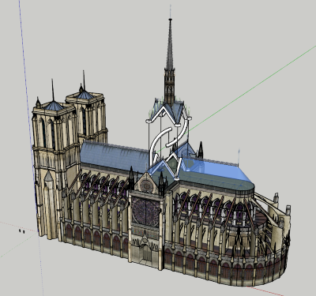

EPI : Un toit pour Notre Dame de Paris
Activité 1 : Technologie : Modélisation avec SketchUp : Un nouveau toit pour la Cathédrale. Suite à l’incendie du 15 avril 2019, Notre Dame de Paris à perdu son toit...
Activité 2 : Arts Plastiques : Réalisation de la maquette
Activité 3 : Éducation Musicale : Conception de la bande sonore
Activité 4 : Présentation oral devant le jury EPI
Activité 5 : Exposition le 11 avril 2022 - Grande Halle de la Villette - Paris

Flèche en tenségrité
Tenségrité
Tensegrity = tensile integrity ( signifie réseau tendu continu )
Comment le solide blanc peut-il tenir en l’air ?
On isole le solide blanc. Son poids peut être modélisé par le vecteur P situé au barycentre. On trace en rouge la force P.
On trace en bleu les forces de traction exercées par les câbles aux 4 coins. Ft1,Ft2,Ft3,Ft4 sont dirigées vers le bas.
De même, au centre du solide blanc, le câble central exerce une force de traction. On trace en vert cette force Ft5. Elle est dirigée vers le centre de ce câble : donc vers le haut.
A l’équilibre statique la somme des vecteurs donne le vecteur nul : Ft1+Ft2+Ft3+Ft4+P+Ft5 = 0
et donc : ||Ft5|| = ||Ft1+Ft2+Ft3+Ft4+P||Conclusion : C’est le petit câble central qui supporte tout !
Bruno JARDEL - 2022